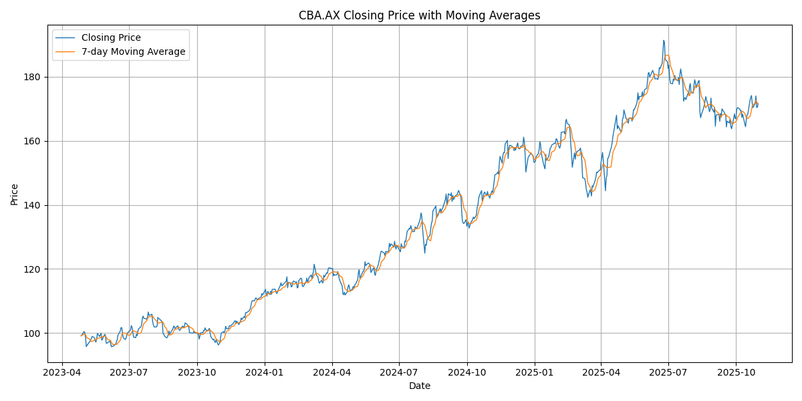

Project Repository
View the full project on GitHub
The repository includes all code, data, analysis scripts, Jupyter notebooks, and documentation for this stock price prediction project.
Project Overview
This project predicts daily closing prices for a single major Australian stock (CBA.AX) using historical data from the Yahoo Finance API. The objective is to evaluate how different models perform when trained on limited data—specifically, the past 2 years of daily closing prices. The workflow covers data collection, preprocessing, feature engineering, model training, and evaluation. Results focus on comparing machine learning models to naive baselines for this single company.
Stock Price Randomness & Smoothing
The daily closing prices of stocks often appear highly random and volatile. However, when a moving average is applied—such as a 7-day moving average—short-term fluctuations are smoothed out, and longer-term patterns or trends can become visible.

Above: The blue line shows the daily closing price of CBA.AX, while the orange line shows the 7-day moving average. The moving average reveals underlying trends that are not obvious in the raw, noisy data.
Feature-Engineered Data Example (CBA.AX)
- date: The trading date (YYYY-MM-DD).
- closing_price: The actual closing price of CBA.AX on that date.
- clolag_1: The closing price from the previous trading day.
- price_diff: The difference between the current and previous day's closing price.
- prilag_1: The previous day's price_diff value.
- prilag_2: The price_diff value from two days ago.
- prilag_3: The price_diff value from three days ago.
- prilag_4: The price_diff value from four days ago.
- prilag_5: The price_diff value from five days ago.
| date | closing_price | clolag_1 | price_diff | prilag_1 | prilag_2 | prilag_3 | prilag_4 | prilag_5 |
|---|---|---|---|---|---|---|---|---|
| 2023-05-11 | 98.35 | 97.85 | 0.5 | 0.51 | 0.22 | 0.99 | 0.37 | -2.53 |
| 2023-05-12 | 98.96 | 98.35 | 0.61 | 0.5 | 0.51 | 0.22 | 0.99 | 0.37 |
| 2023-05-15 | 98.5 | 98.96 | -0.46 | 0.61 | 0.5 | 0.51 | 0.22 | 0.99 |
| 2023-05-16 | 97.59 | 98.5 | -0.91 | -0.46 | 0.61 | 0.5 | 0.51 | 0.22 |
| 2023-05-17 | 97.14 | 97.59 | -0.45 | -0.91 | -0.46 | 0.61 | 0.5 | 0.51 |
| 2023-05-18 | 98.0 | 97.14 | 0.86 | -0.45 | -0.91 | -0.46 | 0.61 | 0.5 |
Models Used
- Naive Baseline Models: Previous day's closing price, 5-day moving average, and previous day plus previous price difference.
- Linear Regression: Predicts closing price and price difference using lagged features.
- XGBoost Regressor: Gradient boosting model for time series regression on price differences.
- Prophet: Additive time series forecasting model from Facebook, used for closing price prediction.
How to Use This Project
- All analysis scripts and notebooks allow you to select a company for modeling.
- Data is loaded from the combined CSV (
Data/output_all_companies.csv). - See the
/Analysisfolder for EDA, feature engineering, and modeling scripts/notebooks. - The web frontend is in
src/Frontend/.
Key Results & Model Validation
Below are the validation scores (RMSE and MAE) for each model type, calculated on the test data for CBA.AX:
Baseline Models
| Model | Target | RMSE | MAE |
|---|---|---|---|
| naive_previous_day | closing_price | 1.74 | 1.25 |
| naive_5day_avg | closing_price | 2.52 | 1.88 |
| naive_diff_addition | closing_price | 2.45 | 1.79 |
Linear Regression
| Model | Target | RMSE | MAE |
|---|---|---|---|
| linear_regression | closing_price | 2.23 | 1.66 |
| linear_regression | price_diff | 2.24 | 1.67 |
XGBoost
| Model | Target | RMSE | MAE |
|---|---|---|---|
| xgboost | price_diff | 2.23 | 1.66 |
Prophet
| Model | Target | RMSE | MAE |
|---|---|---|---|
| prophet | closing_price | 5.29 | 4.19 |
Conclusion
The results demonstrate that, for this single stock and limited data period, simple naive models—especially using the previous day's closing price—can outperform or match more complex machine learning models. Linear regression and XGBoost provided only marginal improvements over the naive baselines, while Prophet performed significantly worse, likely due to the short time series and the random nature of daily price movements.
Key takeaways:
- Stock prices are highly random day-to-day, making short-term prediction challenging.
- Naive models can be strong benchmarks, especially with limited data.
- Complex models may require more data or additional features to outperform simple baselines.
- Smoothing (e.g., moving averages) can reveal trends, but does not guarantee predictive power for daily changes.
About & License
This project is open-source under the MIT License. Contributions and suggestions are welcome!